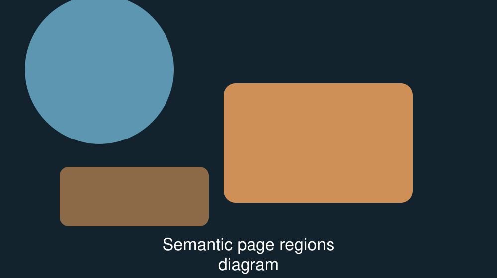

Your headings are not font sizes
Choosing a heading level by how big it looks is the most common structural mistake on the web, and the easiest one to stop making.
By Omar Fathy. Published . About 7 minutes to read. Filed under document structure.
Where the habit comes from
Nobody sets out to misuse a heading. It happens because of the order
we work in. A designer hands over a screen, the biggest text on that
screen becomes h1, the next biggest becomes
h2, and the small bold label above a card becomes
h4 because h4 happens to be about the right
size in the browser's default styling.
That produces markup that matches the picture and describes nothing. The heading level is doing a job that belongs to CSS, and the job it was supposed to do — saying which parts of the page contain which other parts — is left undone.
A colleague put it to me like this last year:
a heading level is a claim about containment, not about
typography.
I have not found a shorter way to say it.
What actually breaks
The heading levels are the table of contents of your page. Assistive technology builds a list of headings and lets its user jump between them. That list is how a great many people read a long page — they never read it top to bottom at all.

h1 for the document,
h2 for each part of it, and h3 only
inside the part it belongs to.
In the outline above, every heading has exactly one parent. Read it as a sentence and it still makes sense: the document contains three parts, and the second part contains two subsections. Now imagine the same page where the second part was marked as a level-four heading because the design made it small. The outline claims that part is inside something that does not exist, and the reader jumping through headings has no way to know where they landed.
Information, structure, and relationships conveyed through presentation can be programmatically determined or are available in text.
— Web Content Accessibility Guidelines 2.2, success criterion 1.3.1. Read the full explanation of success criterion 1.3.1 (opens in a new tab)
Three groups of readers pay for a broken outline:
- Screen reader users, who navigate by heading and get an outline that lies about the page.
-
Readers using a reading-mode or article extractor, which decides
what the main content is from the heading structure.
- Browser reading modes
- Read-it-later services
- Translation tools that work section by section
- Search engines, which use the outline to work out what the page is actually about.
Reading a page as an outline
Here is the structure I write before I write anything else. Note that it contains no styling decisions at all — the only question each line answers is what is inside what.
<h1>Your headings are not font sizes</h1>
<h2>Where the habit comes from</h2>
<h2>What actually breaks</h2>
<h2>Reading a page as an outline</h2>
<h3>Checking the outline in the browser</h3>
<h2>Fixing a page you have already shipped</h2>Checking the outline in the browser
You do not need a plugin to see this. Open your developer tools
with F12, open the accessibility tree, and read the
headings in order. If you would rather read the raw document,
press Ctrl + U to view source and search for
h1. Whatever you use, read the headings on their own,
with the page's styling out of your mind.
If the list of headings does not read like a table of contents somebody could follow, the page is not finished.
Fixing a page you have already shipped
You almost never need to redesign anything. The fix is usually a twenty-minute edit, in this order:
- List every heading in the page, in document order.
-
Find the one heading that names the whole document. Make it the
only
h1. - For every other heading, ask what it is inside, and set its level to one more than its parent's.
- Delete headings that are not headings. A small bold label above a price is text, not a section title.
- Only now, restore the sizes you wanted — in your stylesheet, where sizes belong.
Do that once and the habit breaks for good, because you will have seen how short the correct version is.